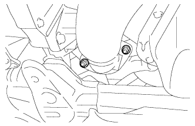
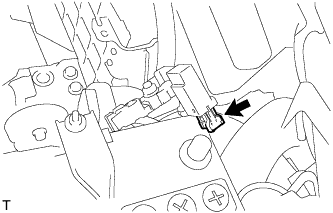
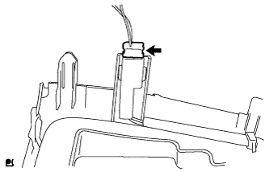
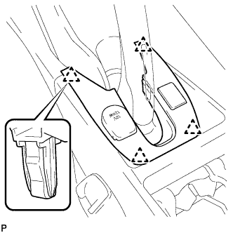
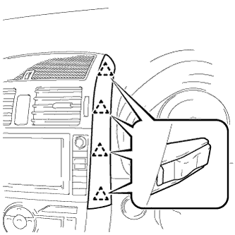

Transmission Control Cable Assembly (U660E) Installation |
| 1. Install Transmission Control Cable Assembly |
 |
Install the transmission control cable with the 2 nuts.
 |
Connect the transmission control cable support to the engine mounting insulator rear with the bolt.
 |
Connect the transmission control cable to the control shaft lever with the nut.
Turn the nut of the transmission control cable 180° counterclockwise, and while holding the nut, push in the stopper until it clicks 2 time.

Install the cable outer of the transmission control cable to the shift lever retainer, check that the spring is at position A shown in the illustration, and push in the stopper.

 |
Install the cable end to the shift control unit.
 |
Push the lock piece into the adjuster case.
| 2. Install Front Floor Heat Insulator NO.1 |
 |
Install the front floor heat insulator No.1 with the 3 nuts.
| 3. Install Exhaust Pipe Assembly Front |
 |
Install the front exhaust pipe assembly with a new gasket and 2 nuts.
 |
Install the exhaust pipe bracket with 2 bolts.
 |
Using SST, install the oxygen sensor and connect the oxygen sensor connector.
| 4. Install Exhaust Pipe Assembly Center |
 |
Install the exhaust center pipe assembly with 2 new gaskets, 2 nuts and 2 bolts.
 |
Before installing the oxygen sensor body, twist it approximately 4 turns as shown in the illustration, then install it.
 |
Using SST, install the oxygen sensor.
| 5. Install Engine Under Cover NO.1 |
Install engine under cover NO.1 with the 6 bolts and 7 clips.
| 6. Install Battery Carrier NO.2 |
 |
Install battery carrier NO.2 with the 2 bolts.
| 7. Install Battery Carrier |
 |
Install the battery carrier with the 4 bolts.
Attach the 2 clamps to the battery carrier.
Install the battery tray.
| 8. Install Air Cleaner Case |
 |
Install the air cleaner case with the 3 bolts.
Connect the clamp.
| 9. Install Air Cleaner Cap w/ Air Cleaner Hose |
 |
Install the hinge portion first, and then install the air cleaner cap w/ air cleaner hose with the 3 clamps.
Install the clamp hose band. (*1)
Connect ventilation hose No.2. (*2)
Connect the air flow meter connector. (*3)
| 10. Install Battery |
Install the battery to the vehicle
Install the insulator.
 |
Connect the current sensor connector.
 |
Install the battery clamp with the bolt and nut.
Connect the battery positive terminal with the nut.
| 11. Install Instrument Panel Finish Panel Lower NO.2 |
 |
Engage the 6 clips and 4 claws.
 |
Install the instrument panel finish panel LWR CTR with the 2 screws <C>.
| 12. Install Instrument Panel Finish Panel Lower NO.1 |
 |
Push in the direction of the arrow shown in the illustration to engage the 2 clips and guide.
 |
Engage the 4 claws and 2 guides.
 |
Install instrument panel finish panel lower No.1 with the 2 screws <C>.
| 13. Install Instrument Panel Under Tray |
 |
Engage the 4 claws and install the instrument panel under tray.
| 14. Install Box Bottom Mat |
| 15. Install Console Box Insert FR NO.2 |
 |
Insert the guide.
Engage the 3 claws and install the console box insert.
| 16. Install Console Box Insert |
 |
Insert the guide.
Engage the 3 claws to install console box insert front No.2.
| 17. Install Console Box Assembly Rear |
 |
Engage the 4 claws.
 |
Install the console box assembly RR with the 4 bolts and 2 screws.
| 18. Install Console Box Carpet |
 |
Install the console box carpet.
| 19. Install Instrument Panel Finish Panel LWR CTR |
|
Engage the 6 clips and 4 claws.
|
Install the instrument panel finish panel LWR CTR with the 2 screws <C>.
| 20. Install Position Indicator Housing Assembly |
 |
Connect the connector.
 |
Engage the 7 claws and install the position indicator housing assembly.
| 21. Install Console Box Cover RR |
Connect the connectors.
 |
Engage the 4 clips to install the console box rear cover.
| 22. Install Shift Lever Knob |
 |
Turn the shift lever knob in the direction of the arrow shown in the illustration to install it.
| 23. Install Instrument Panel Finish Panel End RH |
 |
Engage the 4 clips and install the instrument panel finish panel end RH.
| 24. Install Instrument Panel Finish Panel End LH |
 |
Engage the 4 clips and install the instrument panel finish panel end LH.
| 25. Connect Battery Negative Terminal |
| 26. Install Radiator Upper Air Deflector |
 |
Install the radiator upper air deflector with the 9 clips.
| 27. Inspect Shift Lever Position |
Turn IG ON and depress the brake pedal.
When shifting the shift lever to each position, check that the shift lever operates smoothly, moves into each position with a positive feel, and the position indicator shows the position correctly.
Start the engine, and check that the vehicle moves forward when shifting from the N position to the D position, and moves backward when shifting to the R position.
| 28. Adjust Shift Lever Position |
Apply the parking brake and move the shift lever to the N position.
Remove the instrument panel finish panel lower.
(see)
 |
Disconnect the cable end from the shift lock control unit.
 |
Using a thin-bladed screwdriver, pull out the stopper of the transmission control cable, turn the nut approximately 180° counterclockwise, and while holding the nut, disconnect the transmission control cable from the shift lever retainer.
 |
While pushing the claw of the lock piece, hold down the claw on the back side and push up the lock piece from the back side.
Turn the nut of the transmission control cable 180° counterclockwise, and while holding the nut, push in the stopper until it clicks 2 time.
Install the cable outer of the transmission control cable to the shift lever retainer, check that the spring is at position A as shown in the illustration, and push in the stopper.
|
Install the cable end to the shift control unit.
|
Push the lock piece into the adjuster case to lock it.
After adjustment, inspect the operation, and if there is a problem, adjust again.
Install the instrument panel finish panel lower.
(see)
| 29. Inspect for Exhaust Gas Leaks |
Check that there are no exhaust gas leaks from the locations shown in the illustration (exhaust pipe joints and each sensor installation area).

| 30. Setting Procedure When Disconnecting/Reconnecting Battery Terminal |
)